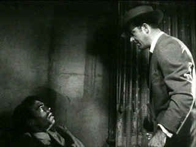

| Kansas City Confidential/ B,C- |
| Dark City/1952/99/FS 1.33/BW |
Kansas City Confidential is a sweaty Film Noir. The sweating starts when bad boy Pete Harris is recruited as part of a heist team. Jack Elam's (Harris) long and rubber face beads up with tension. When Joe Rolfe steps into Harris's shoes, the desperate framed hero played by John Payne sweats in every frame. Director Phil Karlson's close-ups emphasize the beads of perspiration sliding down Rolf's face like amorphous acne. What makes the sweat even more remarkable is the cool of others in the same frame. It's like these characters are suffering from a leaky nervous system.
 |
|
Joe roughs up Harris. ©Dark City |
The central conceit is pretty good. None of
the robbers know the identity of the others except for "Mister
Big," the guy who sets everything up. The essential planning is
depicted by Karlson at the outset in strong visual strokes. The
recruitment of the bad guys is short, efficient, taking up little time in
getting to the heart of the matter. The movie is all about the split of
the heist proceeds and how that plays out. It's not as fast-paced or
clever as one might hope, but it holds your attention as it moves toward
the pay-off.
John Payne is an effective Noir protagonist.
Payne often looks forlorn. Nothing is going his way. He's not an
especially good actor, but the bad luck quality that blends into the fiber
of his clothes translates well for the part of ex-con Joe Rolfe. Preston
Foster knows his way around tough guys. The movie veteran gives Mister Big
a hefty dose of confidence. Lee Van Cleff and Neville Brand join Jack Elam
forming the trio of recruits for the heist. All the players are tough,
though Karlson is somewhat inconsistent in depicting the players from
scene to scene. Colleen Gray plays the good girl out to save the hero with
a extra helping of smile.
Production values are clearly limited. The
"B" budget lingers at the frayed edges of the settings, but it
works in favor of the no-nonsense style of director Karlson. Kansas City
Confidential is a lean entertaining example of Film Noir.
This is a pretty dirty-looking DVD. During the
first reel there's a full length scratch with ringing continuously.
Various dirt and scratches mar the image from start to finish. Scene to
scene clarity is inconsistent. Lighting and gray scale are pretty good.
The Karlson ambiance is replicated fairly well. Film grain is a bit
inconsistent and slightly heavy at times. There's some hiss in the mono
soundtrack. Overall, the DVD is merely serviceable.
As a bonus, a nice little interview with
supporting star Colleen Gray is conducted by Film Noir author Eddie
Muller. There's also a trailer for Karlson's 5 Against the House,
in pretty poor shape, but it looks like a good flick.

Selections from the Feature
Archive include articles on Akira Kurosawa, Frank Darabont, Blonde Bimbos, Hollywood Street Gangs, or Vietnam: The Hollywood Pariah, and many
more....

Click on the image of The Heistmasters for an interesting feature on
the tough guys that pull off the big jobs.

The Movie Poster Archive includes extensive poster images from the films of stars like Susan Hayward, Kirk Douglas, Katharine Hepburn and many more. Our featured star is Richard Widmark.


 Have you visited Home Theater Talk
lately? One of the friendliest places on the Net for Home Theater and DVD
discussion, you can get help for installation problems or simply share
your opinions with other Vidiots.
Have you visited Home Theater Talk
lately? One of the friendliest places on the Net for Home Theater and DVD
discussion, you can get help for installation problems or simply share
your opinions with other Vidiots.

Manufacturer of computer-video interfaces, switchers, distribution
amplifiers, computer-video scan converters, and high resolution cable.
Found in many high end home theater systems.

Maximizing home theater sound and image featuring quality
interconnects and speaker wire.
 The Cinematheque is a cultural,
arts organization that programs year-round specialty film series at the
newly renovated, landmark 1922 Egyptian Theatre on
Hollywood Boulevard!
The Cinematheque is a cultural,
arts organization that programs year-round specialty film series at the
newly renovated, landmark 1922 Egyptian Theatre on
Hollywood Boulevard!

DVD reviews for women
from a woman's point of view